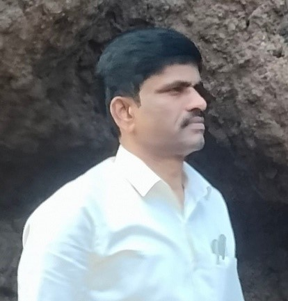
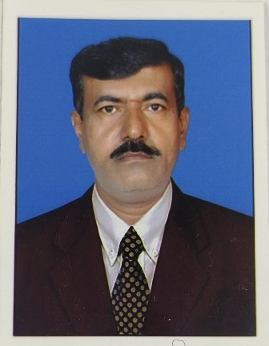

College Development committee and Chairperson
President & Chairperson : Shri S R Vishwanath
About : MLA, Yelahanka | Member, TTD Board | Former Chairman,
Bangalore Development Authority (BDA)
Singanayakanahalli Ramaiah Vishwanath is an Indian Politician who is
current MLA from Yelahanka constituency since 25 May 2008.
He is former Chairman of Bangalore Development Authority and presently
Member of Tirumala Tirupati Devasthanams (TTD) Board. He is a social
worker and the chairperson of Government school and PU college of
Rajanukunte. He is the founder of Vishwa Vani Foundation.
Vice-president
R M Somashekar Reddy
About - Businessman
Treasurer –
RC Rajendra Kumar
About - B.Pharm, Social Worker.
Board of Members
Shri. M Manjunath –
Edu - BA
Shri Shivanna N C
Edu – MA, M.Phil
Rtd.Principal
Shri.M MohanKumar
Edu - Dip civil
Shri M Thimma Reddy
Edu - BSC, B.Ed
Principals
Incharge Pricipal Of PU college:
V R Manjula
Edu - M.A,M.Phil
Teaching experience – 17 years
Joining date – 05/11/2007

Principal Of High school:
Kantaruju B G
Edu – MSc, M.Ed, KES
Teaching experience – 17 years
Joining date – 15/06/2007

Incharge Pricipal Of Primary School:
SREENIVASA G
Edu – CPEd, Kan& Eng Sr typing, PUC
Teaching experience – 29 years
Joining date – 26/07/1994